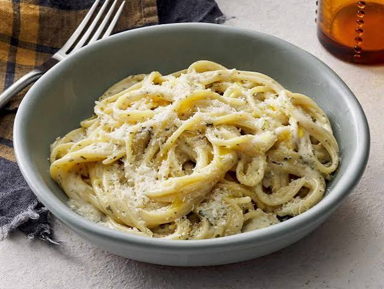

Creamy Garlic Parmesan Pasta

Description
A rich, comforting Italian-inspired dish made with al dente pasta tossed in a velvety, garlic-infused cream and cheese sauce.
Ingredients
- Fettuccine pasta: 8 oz (225g) standard noodles.
- Butter: 2 tbsp unsalted butter.
- Garlic cloves: 3, minced.
- Heavy cream: 1 cup for a rich sauce base.
- Chicken broth: 1/2 cup to balance the cream richness.
- Parmesan cheese: 1 cup, freshly grated.
- Olive oil: 1 tsp to toss with the cooked pasta.
- Salt and black pepper: To taste.
- Fresh parsley: 2 tbsp, finely chopped for garnish.
Steps
- Boil the pasta: Bring a large pot of salted water to a boil. Add the fettuccine and cook according to package instructions until al dente. Drain well and toss lightly with olive oil to prevent sticking.
- Sauté the garlic: Melt the butter in a large skillet over medium heat. Add the minced garlic and cook for about 1 minute until fragrant, making sure it does not burn.
- Build the liquid base: Pour the chicken broth and heavy cream into the skillet. Bring the mixture to a gentle simmer and let it cook for 3 to 4 minutes until it begins to thicken slightly.
- Melt the cheese: Reduce the heat to low. Gradually whisk in the grated Parmesan cheese until it is completely melted and the sauce is completely smooth.
- Season the sauce: Taste the sauce and season with salt and freshly cracked black pepper according to your preference.
- Combine and coat: Add the cooked fettuccine directly into the skillet. Toss the pasta gently for 1 to 2 minutes until every strand is thoroughly coated and the sauce clings to the noodles.
- Garnish and serve: Remove from the heat, sprinkle the fresh chopped parsley over the top, and serve immediately while hot.
Home